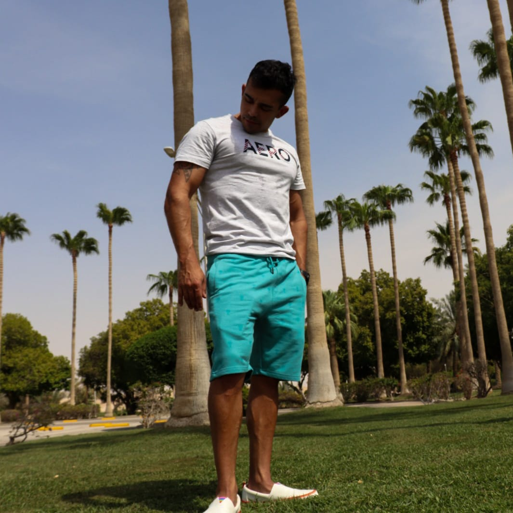
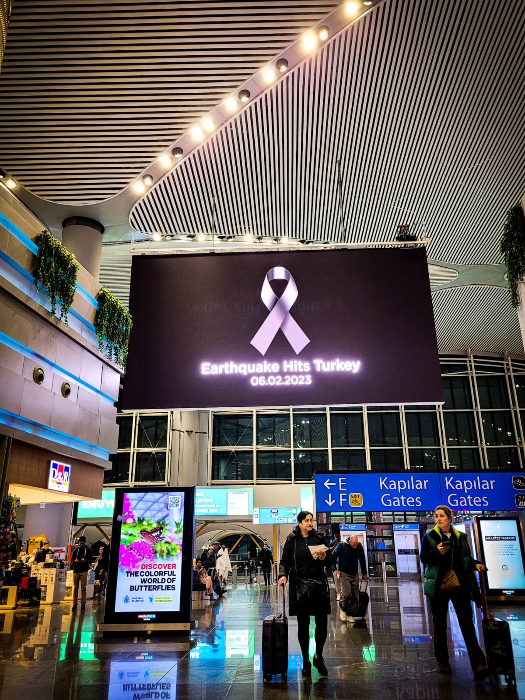
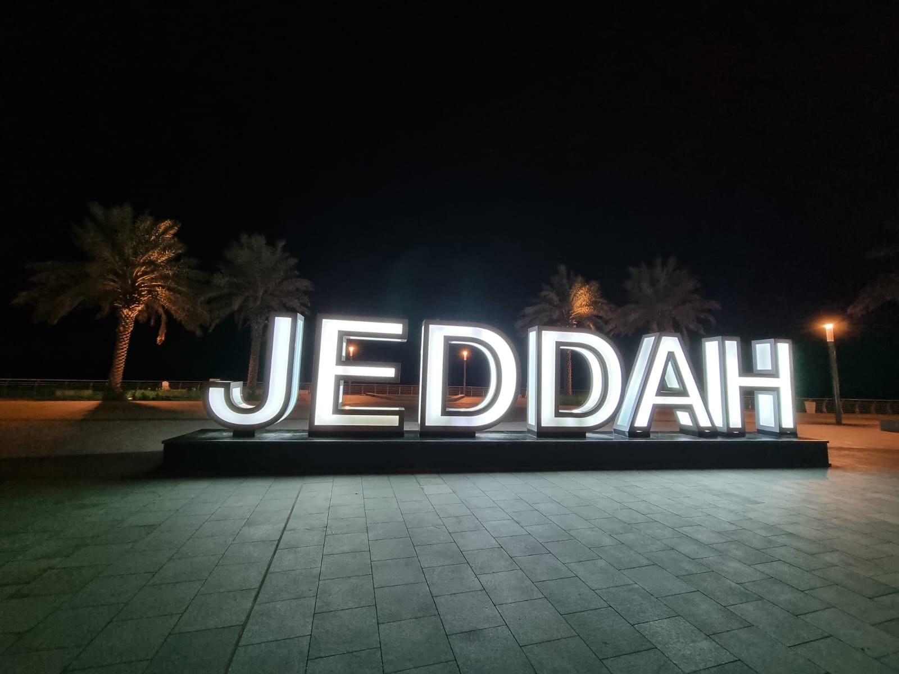

Primeros Meses
14/08/2023

Han transcurrido 6 meses desde que pisé Saudi por primera vez. Ha pasado tanto tiempo y, a la vez, pareciera que el tiempo aquí no pase nunca.
Ramadán 2023
Durante Ramadán aprendí mucho sobre los musulmanes en todos los aspectos posibles. En las carreteras y por sms había avisos de no conducir si se estaba muy fatigado, a causa de no haber bebido ni comido nada durante todo el día. Como expatriado yo podía nutrirme sin problema, pero la gran mayoría de comercios permanecían cerrados durante el día. Además, había que evitar comer en público por respeto a los locales. Me acuerdo de ir dando vueltas por Omán tratando de encontrar algún restaurante abierto durante el Ramadán y terminar pidiendo al Pizza Hut.
El Verano
Desde bien antes de que llegara el verano los expatriados me prevenían de los horrores del verano Saudí. Las altas temperaturas y el viento sofocante impiden a cualquiera llevar a cabo sos quehaceres diarios con normalidad. Durante esta época los expatriados huyen, despavoridos, a tierras de clima más suave. Durante el día en raras ocasiones verás animal u hombre en la calle, pero cuando cae el Sol la actividad es frenética. A las 23.00 están las calles abarrotadas todos los días y el tránsito es imposible.
Choque Cultural
Aunque hice mi investigación pertinente previa al viaje, lo que más rápido quería aprender eran las normas de la sociedad Saudí. Ya que tenía claro que aquí había restricciones que yo no podía ni imaginar. Me chocó mucho no poder tocar a una mujer nunca, y aun a fecha de hoy es de las cosas que más extraño. Ni una palmadita en la espalda ni un codazo amistoso ni chocar la mano en una partida de bolos. No se toca.Luego... Tampoco puedes ir solo con una mujer por la calle, no puedes ir a muchos sitios en pantalón corto, durante el rezo muchos comercios cierran, etc. Adaptarse fue complicado, al fin y al cabo estás renunciando a tus libertades. Me lo tomé como una prueba, como los monjes que hacen el voto de silencio, el celibato, o el retiro en solitario. Es una buena manera de apreciar lo que siempre hemos tenido, y la verdad es que nunca he creído que mi país sea un lugar tan fantástico, hasta que vine aquí.
Mi Llegada a Saudi
06/03/2023

Llegué a Saudi en Febrero de 2023, justo hice escala en Turquía cuando hubo el terremoto y mi vuelo fue cancelado.
De hecho perdí la escala porque Turkish se retrasó dos veces y cuando llegué mi conexión ya había despegado. Luego esperé una noche en Istanbul para salir la noche siguiente, pero cancelaron el vuelo. Así que volví para el hotel una vez más a esperar 24 horas para el siguiente.
Primeras Impresiones
En la puerta de embarque para mi vuelo en Istanbul ya atisbaba cambios culturales drásticos. Un grupo de gente se congregó en formación en un lado de la sala y rezaban al unísono. Esa fue la primera vez que vi a alguien rezando en un lugar público. Cuando tomamos tierra en el aeropuerto de Dammam tenía claro que estaba en un mundo distinto, me pateé la terminal arriba y abajo intentando encontrar al man que me iba a recibir. Terminé pidiendo a un amable señor que trabajaba en información su teléfono para poder llamar a mi contacto y salir de ese bullicio.
Condiciones de Vida
Travesamos el desierto de noche en una ranchera hasta llegar a lo que parecía un puesto fronterizo, pero no, era la puerta de la urbanización donde iba a vivir. Una vez en la habitación sentí la soledad y el miedo a lo desconocido por primera vez. Durante el viaje estaba demasiado ocupado intentando empaparme de la experiencia. Pero pasados 2 dias de tránsito en Istanbul, el vuelo a Dammam, y el viaje en coche de madrugada hasta mi nuevo hogar, estaba destrozado y la habitación parecía fría y de los años sesenta.
Choque Cultural
Aunque hice mi investigación pertinente previa al viaje, lo que más rápido quería aprender eran las normas de la sociedad Saudí. Ya que tenía claro que aquí había restricciones que yo no podía ni imaginar. Me chocó mucho no poder tocar a una mujer nunca, y aun a fecha de hoy es de las cosas que más extraño. Ni una palmadita en la espalda ni un codazo amistoso ni chocar la mano en una partida de bolos. No se toca.Luego... Tampoco puedes ir solo con una mujer por la calle, no puedes ir a muchos sitios en pantalón corto, durante el rezo muchos comercios cierran, etc. Adaptarse fue complicado, al fin y al cabo estás renunciando a tus libertades. Me lo tomé como una prueba, como los monjes que hacen el voto de silencio, el celibato, o el retiro en solitario. Es una buena manera de apreciar lo que siempre hemos tenido, y la verdad es que nunca he creído que mi país sea un lugar tan fantástico, hasta que vine aquí.
Escapando la Rutina
05/11/2023

En estos meses que he pasado dentro de un campamento he descubierto que el aislamiento de la sociedad es una batalla mental constante.
Aun teniendo acceso a 30 días de vacaciones al año y las posibilidad de fraccionarlas en dos viajes, estas no son suficientes para satisfacer las necesidades de interacción social y sentimiento de liberación enmedio de la sociedad. Estoy encontrando que en el día día del campamento no hay lugar para escapar la rutina, deambular por algún lugar que no haya pisado 100 veces durante la última semana, y tener la oportunidad de satisfacer mi mirada con un paisaje nuevo. Hecho de menos la aleatoriedad, lo desconocido, lo imprevisto, etc. Aunque mi hábitat habitual es de lo más bonito, lleno de verde, con todas las amenidades que necesitamos y poblado por personas con buena actitud; no puedo evitar sentirme atrapado dentro de una cúpula, un zoo en donde los animales pueden moverse con toda comodidad pero siguen apresados sin darse cuenta.
La Batalla Mental
Experimentar los mismos estímulos día tras día es más difícil de lo que podía anticipar. Levantarse a la misma hora, recorrer el mismo camino hasta el trabajo, comer en la misma mesa en el mismo restaurante, comprar comida los jueves, salir a correr por el mismo vecindario, ir al gimnasio completamente solo, tomar un café a la misma hora vieno el Sol ponerse por la misma ventana.
Mecanismos de Defensa
Intentar alterar la rutina es mínimamente efectivo, pero contribuye en cierta medida en optimizar mi bienestar mental. A lo largo de los meses he aprendido que la mejor manera de liberar la mente es viajar a grandes ciudades dentro del reino o países colindantes. Los países que tenemos cerca ofrecen nuevos estímulos sin tener que pagar mucho por el viaje ni pasar demasiado tiempo en el transporte. En mi caso, Jeddah es la ciudad que me aporta la tranquilidad mental que necesito para mantenerme funcionando dentro del campamento.
Jeddah
Jeddah es una gran ciudad localizada en el extremo suroeste de Arabia Saudí. Situada en la orilla del Mar Rojo y cercana a la ciudad sagrada de la Meca. Aun así, Jeddah emerge como la ciudad más progresista en el reino. Ofrece multitud de oportunidades para evadirse de la rutina: parques de atracciones, paseos marítimos, parques, playas privadas, restaurantes (tanto locales como internacionales) y curiosidades turísticas. Ir a Jeddah durante un fin de semana, correr al lado del mar, ir al cine, ir a comer pescado y marisco en un restaurante local, cambiar el sitio donde tomar café cada vez, dar una vuelta en coche y ver las distintas esculturas repartidas por las calles.
Quédate Por Aquí Para Más Aventuras
No te pierdas las próximas entregas. ¡Suscríbete para recibir una notificación cuando haya algo nuevo!